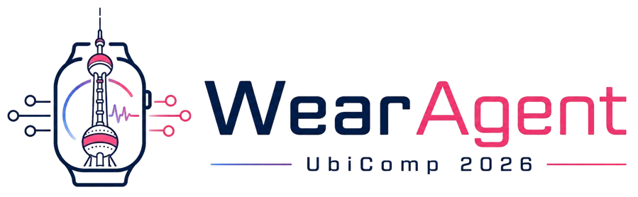
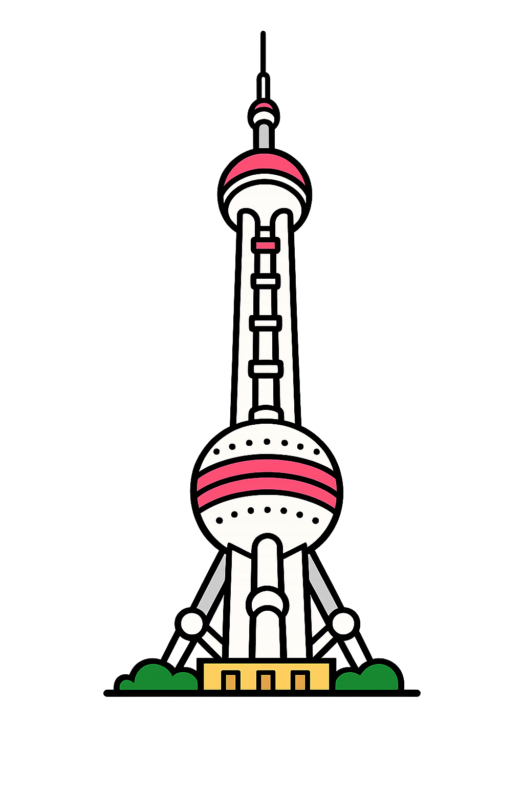

Intervention timing
When should a wearable agent step in, stay quiet, or wait for the user's attention?

The 1st International Workshop on Interactive AI for Personal Wearable Agents
Exploring wearable agents that bridge continuous sensing, foundation model reasoning, and proactive human-agent interaction.
15:59-16:00 · Session transition
17:18-17:25 · 7-minute session discussion
Opportunities, Challenges, and Human-Centered Intelligence

Venue Shanghai, ChinaWearAgent 2026 focuses on a shift from passive activity recognition to proactive, agentic assistance, connecting continuous wearable sensor streams with the reasoning capabilities of LLMs and multimodal foundation models.
When should a wearable agent step in, stay quiet, or wait for the user's attention?
How can an agent act in real time on a real body under physical, computational, and attentional constraints?
Where should the boundary sit between human agency, confirmation, autonomy, and proactive assistance?


Accepted contributions to the first WearAgent workshop at UbiComp/ISWC 2026.
Jiayue Ni, Jianing Yu, and Lilith Yu
Xuejiao Ma, Ruijia Li, and Bo Jiang
Chuqi Dai, Xinyao Li, Fanbo Meng, and Zhanpeng Jin
Jose Manuel Davila Mancilla, Eduardus Tjitrahardja, and Yuntao Wang
Xinyao Li, Fanbo Meng, Chuqi Dai, and Zhanpeng Jin
Qiang Yang, Alexandra Loh, Yuwei Zhang, and Cecilia Mascolo
Wenbo Zhang, Yuan Gao, Dong Huitian, Chenxu Zhu, Chenxu Zhang, Wenkang Zhang, Yang Gao, Jagmohan Chauhan, and Zhanpeng Jin
Yirui Yuan, Chenghang Li, Shurui Zhang, and Yang Gao
Yingke Ding, Zeyu Wang, Hongjing Piao, Leyi Zhang, William Hu, Ziyu Tang, Wanying Mo, Yuanchun Shi, and Yuntao Wang
Shukai Ma and Yubin Lan
Yi-Shan Wu, Eunhee Park, and Yincheng Jin
Wangrui Qian
Chiyue Wang, Dong She, Yang Gao, and Zhanpeng Jin
Joshua Kramer and Guangzhi Tang
A cross-disciplinary team spanning wearable computing, ubiquitous sensing, HCI, mobile systems, and agentic AI.

South China University of Technology
Homepage
South China University of Technology
Homepage
KAIST
Homepage
Northwestern Polytechnical University
Homepage
University of Cambridge
Homepage
University of Michigan
Homepage
Shanghai Jiao Tong University
Homepage
University College London
Homepage
ByteDance
Homepage